Welcome to KDU Mobile
学生の声を反映した近畿大学の公式学生ポータルアプリ


※現在は医学部・工学部でご利用いただけます。
全学部向けには2026年8月頃のリリースを予定しています。
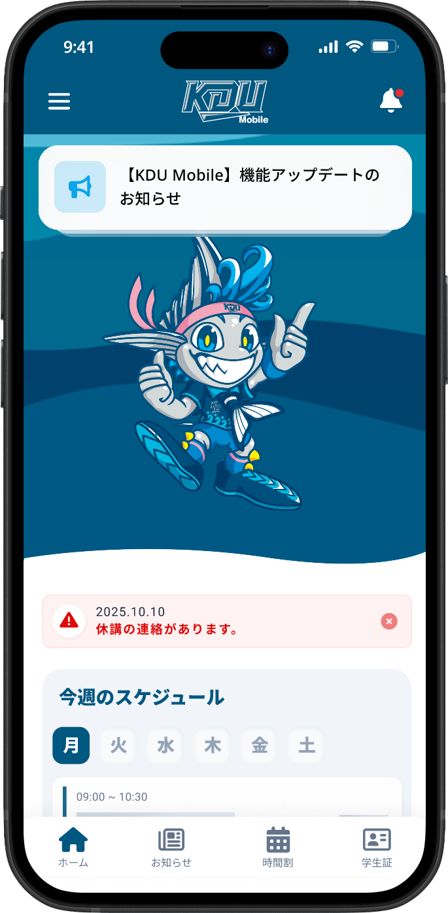

※現在は医学部・工学部でご利用いただけます。
全学部向けには2026年8月頃のリリースを予定しています。

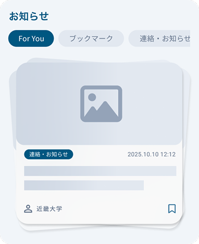
⼤学からのお知らせが表⽰されます。
ホームのウィジェットには未読のお知らせのみ表⽰されます。
スマートフォンではカード形式で簡単に既読・未読にすることができます。
大学からの重要なお知らせは重要なお知らせエリアに表示されます。
その他に大学から伝えたいことはアナウンスとしてアナウンスエリアに表示されます。
重要なお知らせ
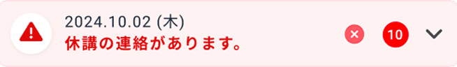
アナウンス
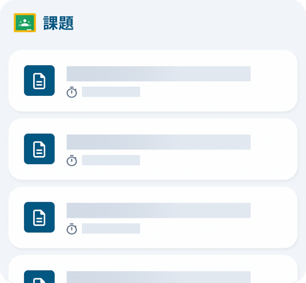
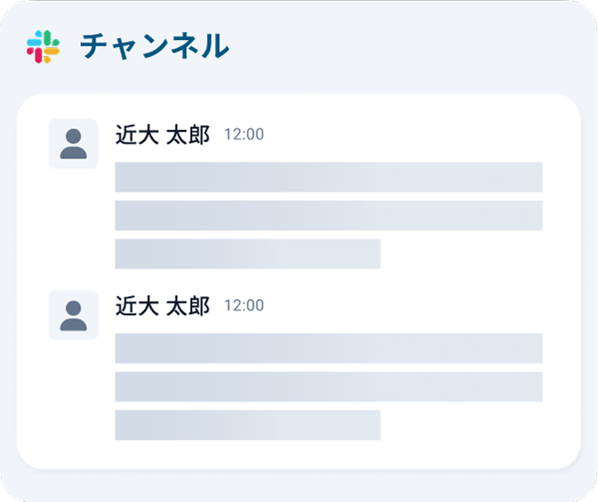
Google Classroomの課題の表示やSlackの表示が可能です。
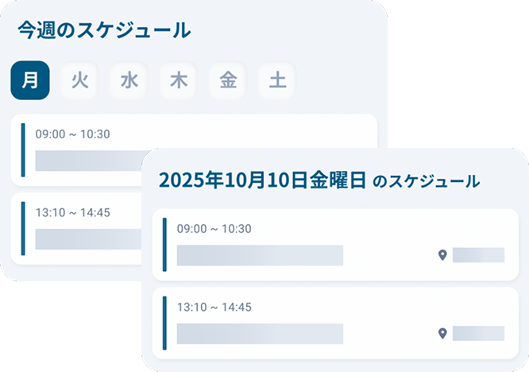
今日のスケジュールと週間のスケジュールウィジェットを配置することができます。
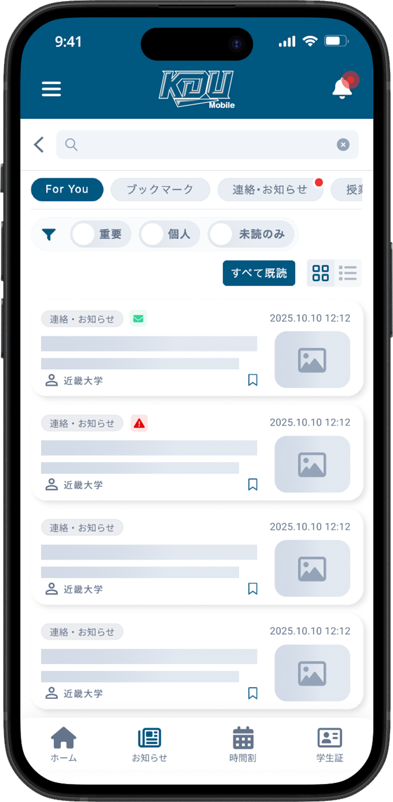
数多くのお知らせから見つけたいお知らせに辿り着けるよう、絞り込みや通知を行います。PDFや画像もプレビューからすぐに確認できます。
カテゴリでの絞り込み
未読のみ表示
一括既読
重要または個人宛での絞り込み
キーワード検索による絞り込み
メール通知
PUSH通知
カテゴリごとに通知の設定が可能
PDFや画像をプレビュー表示可能
ホーム画面に設置可能な今日/今週のスケジュールウィジェットは、履修している授業が表示されます。
※休講・補講・教室変更があった場合は、日毎のUNIPAデータ連携により更新・反映されます。
学生からの要望が多かった時間割に色やメモを追加できる機能を追加しました。
アプリではスクリーンショットを簡単に撮ることができ、友人に共有することができます。
詳細画面ではClassroomのクラスコードの確認ができます。
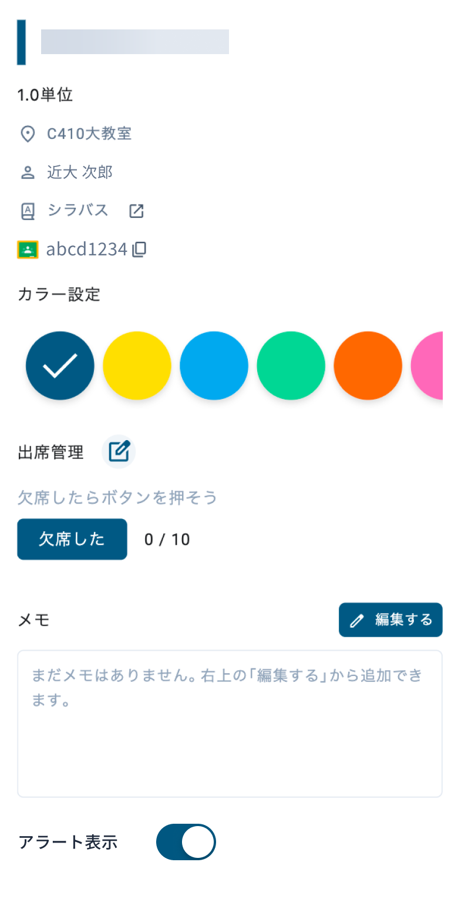
スマートフォンで簡単に学生証を提示することができます。
今後も、より便利で快適な学生生活を送るためのさまざまなサービス展開を検討していきます。
テーマを選択して自分好みの画面デザインにすることができます。
カスタムテーマでは、自分の好きな画像をアップロードしたり、色を変更してより自分好みの画面にすることができます。
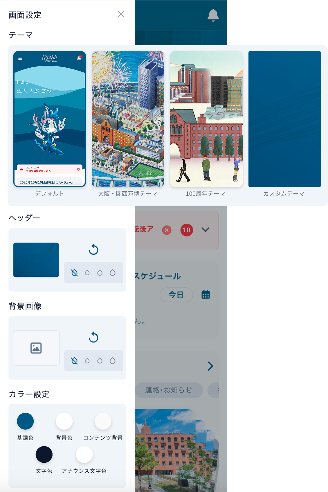
デフォルトテーマ
数多くのお知らせから見つけたいお知らせに辿り着けるよう、絞り込みや通知を行います。PDFや画像もプレビューからすぐに確認できます。
カテゴリでの絞り込み
未読のみ表示
一括既読
重要または個人宛での絞り込み
キーワード検索による絞り込み
メール通知
PUSH通知
カテゴリごとに通知の設定が可能
PDFや画像をプレビュー表示可能
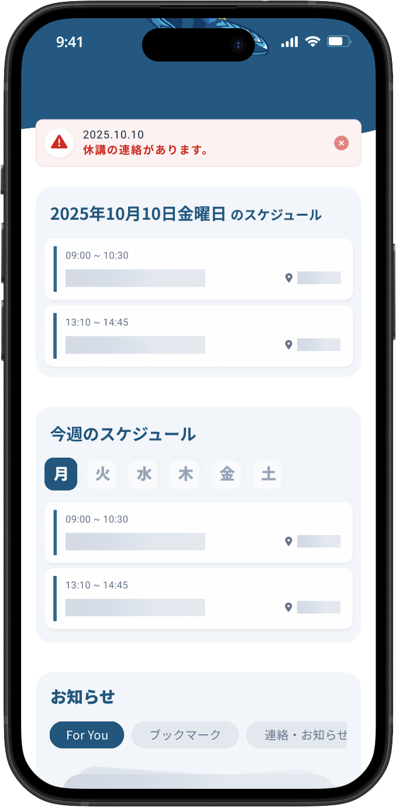
ホーム画面に設置可能な今日/今週のスケジュールウィジェットは、履修している授業が表示されます。
※休講・補講・教室変更があった場合は、日毎のUNIPAデータ連携により更新・反映されます。
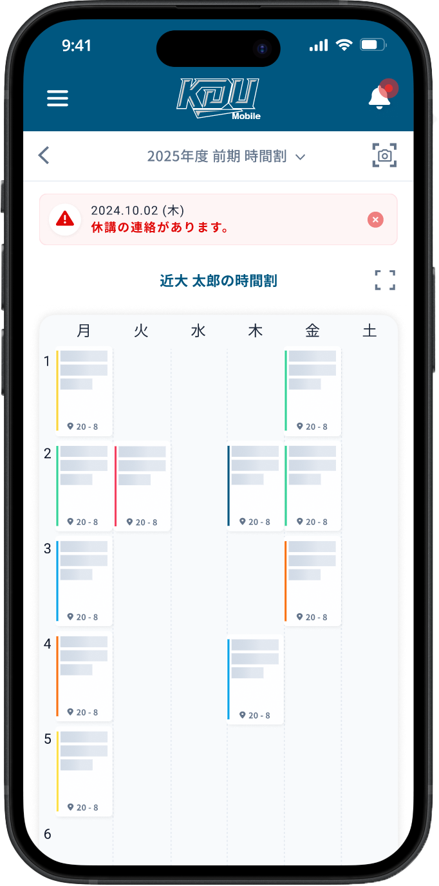
学生からの要望が多かった時間割に色やメモを追加できる機能を追加しました。
アプリではスクリーンショットを簡単に撮ることができ、友人に共有することができます。
詳細画面ではClassroomのクラスコードの確認ができます。
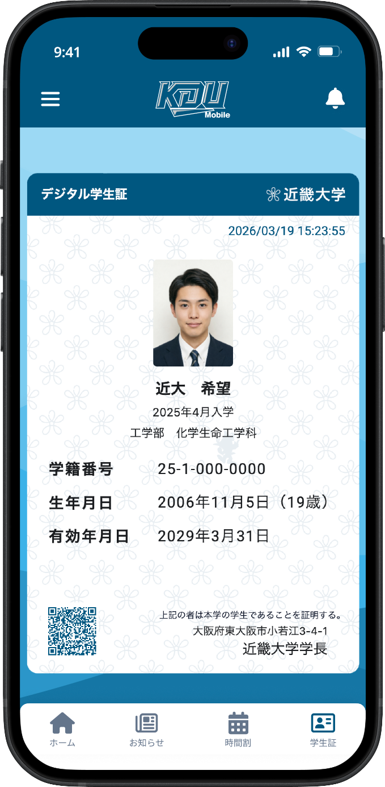
スマートフォンで簡単に学生証を提示することができます。
今後も、より便利で快適な学生生活を送るためのさまざまなサービス展開を検討していきます。
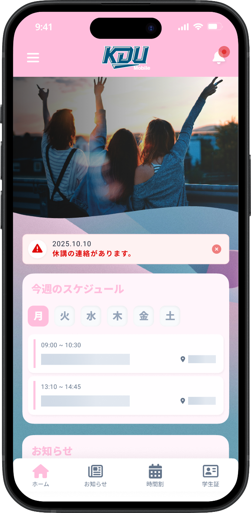
テーマを選択して自分好みの画面デザインにすることができます。
カスタムテーマでは、自分の好きな画像をアップロードしたり、色を変更してより自分好みの画面にすることができます。
デフォルトテーマ
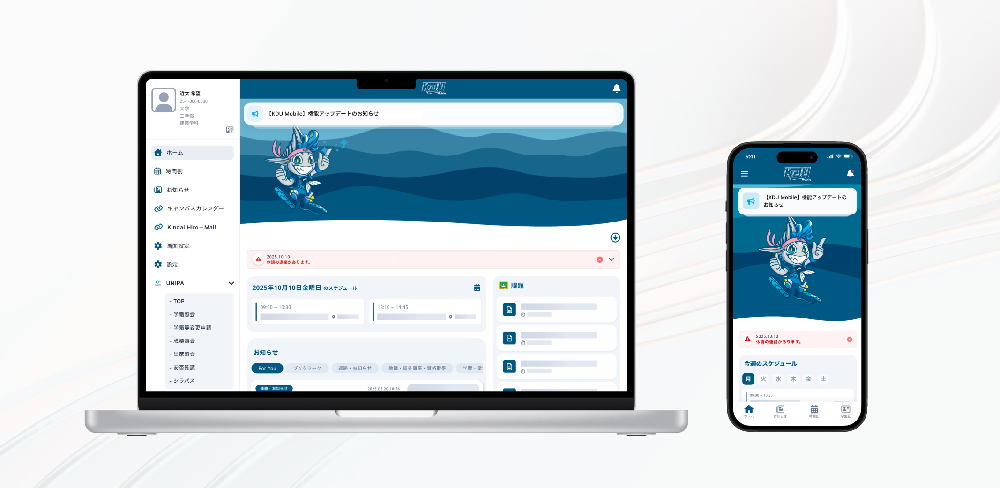
今後も使いやすく便利なアプリになるように、改善や新しい機能の追加をしていきます。
スマートフォン、タブレットデバイスに対応
アプリをダウンロード